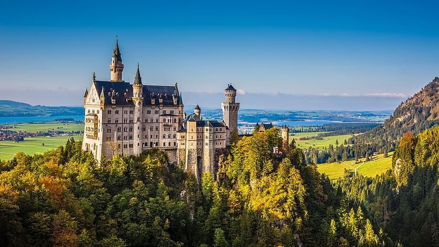
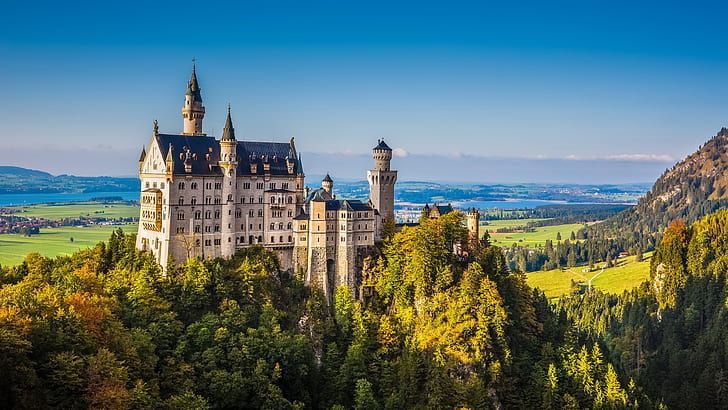
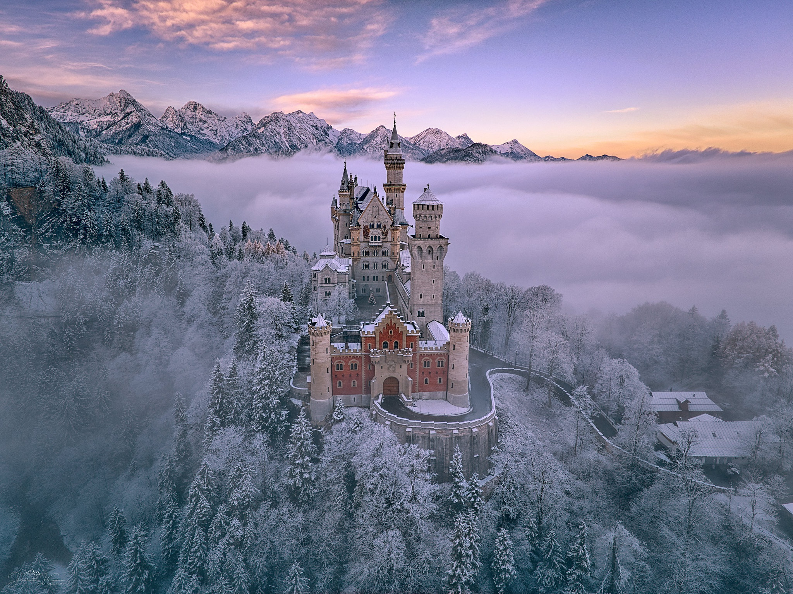
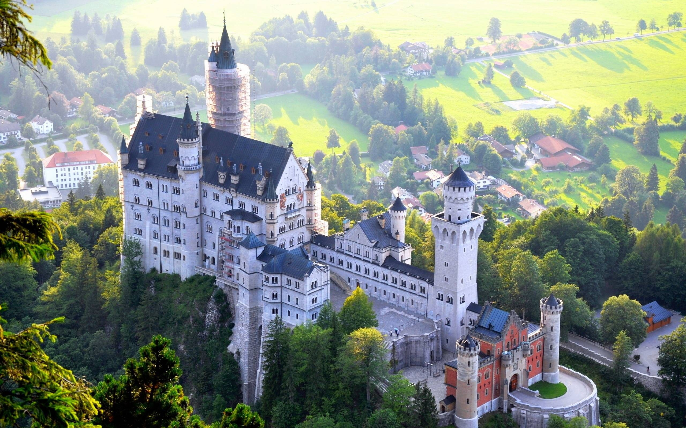
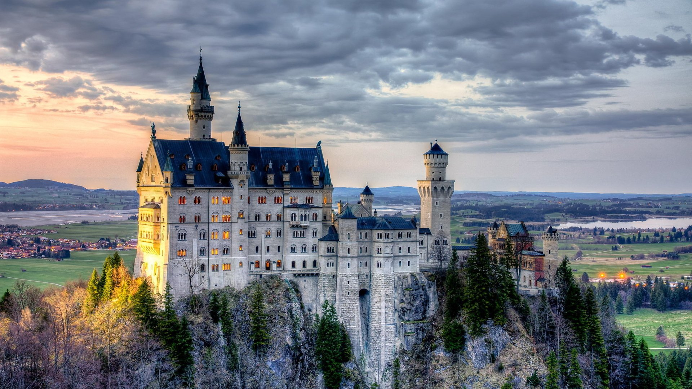
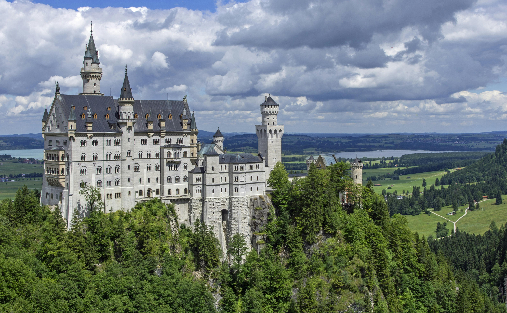
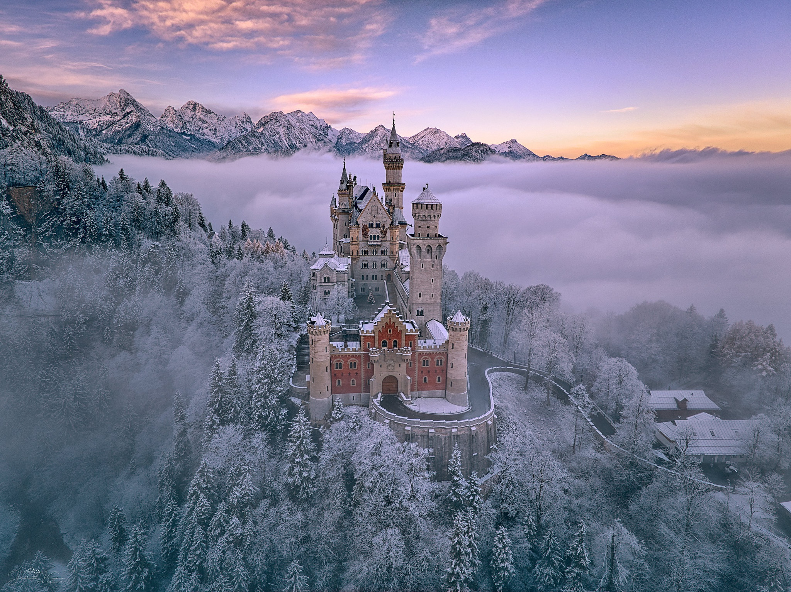
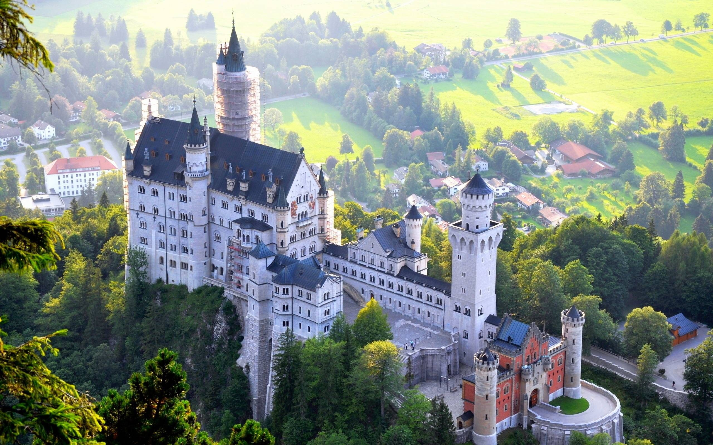
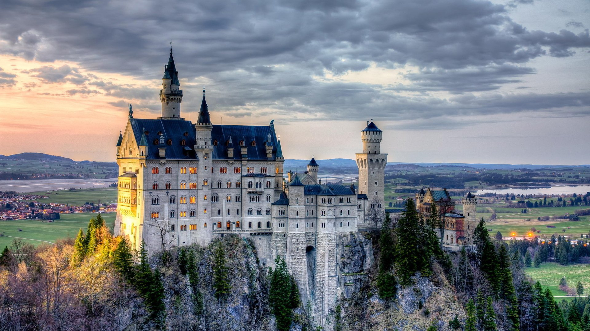
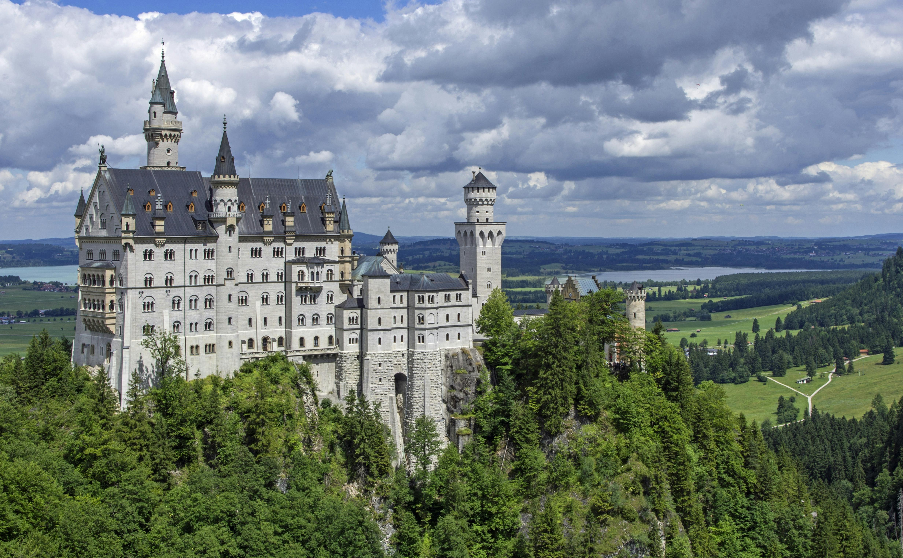

Neuschwanstein Castle
Known As A Castle Of Paradox
Introduction
Neuschwanstein Castle (German: Schloss Neuschwanstein, pronounced [ˈʃlɔs nɔʏˈʃvaːnʃtaɪn]; Southern Bavarian: Schloss Neischwanstoa) is a 19th-century historicist palace on a rugged hill of the foothills of the Alps in the very south of Germany. It is located in the Swabia region of Bavaria,
.......
s
History
Neuschwanstein embodies both the contemporaneous architectural fashion known as castle Romanticism (German: Burgenromantik) and King Ludwig II's enthusiasm for the operas of Richard Wagner. In the 19th century, many castles were constructed or reconstructed, often
.......
s
Construction
In 1868, the ruins of the medieval twin castles were completely demolished; the remains of the old keep were blown up.[25] The foundation stone for the palace was laid on 5 September 1869; in 1872, its cellar was completed, and in 1876, everything up to the first floor, the gatehouse being finished first. At the end of 1882, it was completed and fully furnished, allowing Ludwig to take provisional lodgings there and observe the ongoing construction work.
Funding
The King's demands expanded during the construction of Neuschwanstein, and so did the expenses. Drafts and estimated costs were revised repeatedly.[33] Initially a modest study was planned instead of the great throne hall, and projected guest rooms were struck from the drafts to make place for a Moorish Hall, which could not be realised due to lack of resources. Completion was originally projected for 1872 but repeatedly deferred.[33]
Simplified completion
At the time of King Ludwig's death, the palace was far from complete. The external structures of the Gatehouse and the Palas were mostly finished but the Rectangular Tower was still scaffolded. Work on the Bower had not started but was completed in a simplified form by 1892 without the planned figures of the female saints.
 

 






